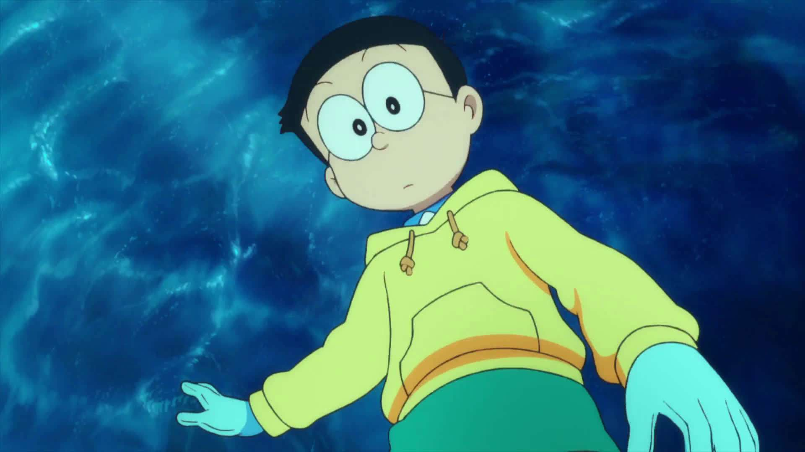

野比大雄  原名：野比のび太 别称：康夫（大雄） 英文名：Nobi Nobita 出生地：东京 姓名含义：野比的爸爸亲自解释：“健康地长大成人，其中还包涵无限发展的愿望” 生日：1964年8月7日（狮子座） 年级：小学四年级（实际只有小学二年级水平） 身高：136厘米 体重：28千克 爱好：睡觉、看漫画、玩、打棒球、恶作剧 特长：翻绳、射击（百发百中）、睡午觉（最快入睡速度只用0.93s——根据第30卷《天才睡眠家大雄》）。 最不擅长：学习、游泳、棒球、跑步 ............（任何事除翻绳、射击、睡觉） 最常穿的衣服：Ｔ恤、短裤 害怕的事物：鬼怪、妈妈 、野狗、老师、胖虎 |